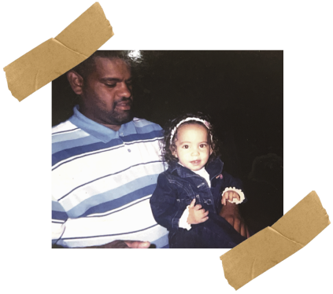
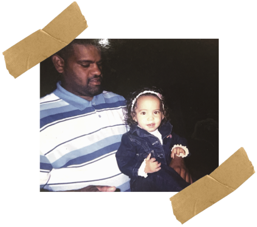
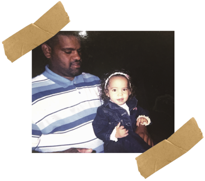
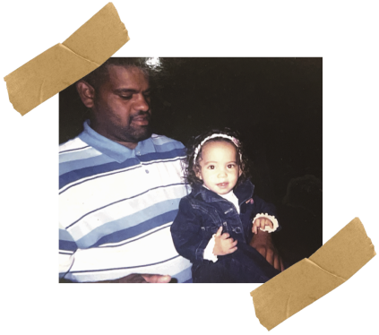

1 Years Old
I don’t remember much from this year, but this is when I began to take shape into the person I’d become. It's strange to see the child I once was, knowing everything that came after— how I’d grow, change, and become who I am today. My hair was just beginning to sprout, and my face was still forming, yet there’s something so pure in this early version of me. It’s a reminder of how time moves, how the person you’ll become is already taking shape, even when you’re too young to know what’s ahead.